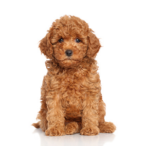

 @u_the_dog
@u_the_dog
Compétences
- Vol de chaussettes
- Aboiement sur les intrus
- Garde de la maison jour & nuit
- Aspirateur sur pattes rien ne reste au sol
Expérience
- Capable de faire semblant de dormir pendant des réunions
- Sait retrouver les chaussettes perdues
- Garde du jardin et aboiement "stratégique"
Formation
- École Nationale des Chiens Très Sages — Diplôme avec mention "Très Bon Toutou"